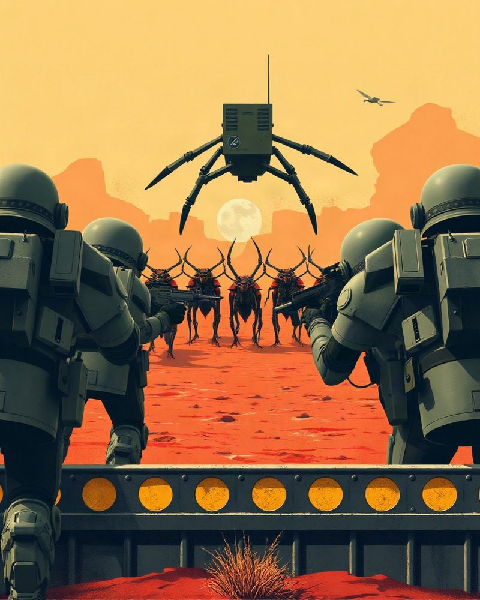

WARDEN SERVICE FIELD BULLETIN No. 7 / OUTPOST KESSEL
The Molt come up out of the ground. Send them back in pieces: every scythe, leg, wing, tail and head comes off where you shoot it.
WASD move, mouse aims, left button fires, right button or G throws a grenade, R reloads, Q or the wheel or 1 and 2 change weapon, Shift sprints, Space jumps, P or Esc pauses, M mutes.
Left thumb moves (push far to sprint). Drag anywhere on the right to aim; the FIRE button also aims while you hold it. Play in landscape.
The game saves at the start of every wave and when a wave is cleared. Continue returns you to the start of that wave. The save lives in this browser at this address; another browser or address has its own.
An original game by evilgouki. Warden figures from Stellar Derelict; textures and poster by Flux; effects, voices and music by ElevenLabs. The Molt are stand-in rigs until segmented models are generated. Sound not yet verified by ear.
The field is paused.
Standing down returns to the bulletin. Your save is the start of this wave.